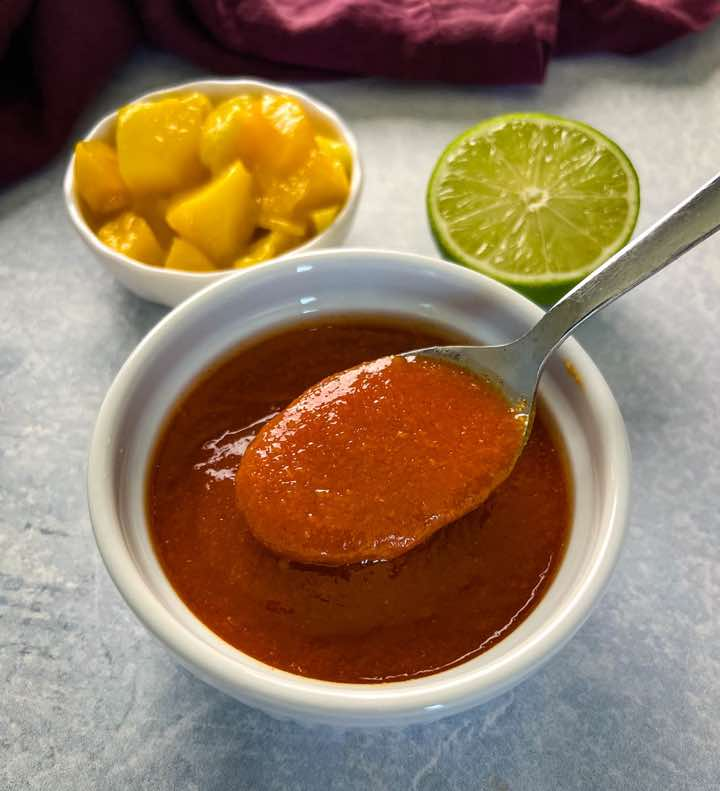

Mango Habanero Sauce
Side DishSauce
Servings2 cups
PrepPT15M
CookPT0S

Ingredients
- 1 cup diced mango
- 1-2 habaneros (Chopped.)
- 2 tablespoons fresh lime juice
- 1 tablespoon apple cider vinegar (Any vinegar will work.)
- 1/4 cup honey
- 1 teaspoon smoked paprika (Regular Paprika is fine.)
- 1 teaspoon garlic powder
- 1 teaspoon onion powder
- salt and pepper to taste
Directions
- Add all of the ingredients to a bowl to blend using an immersion blender or add all of the ingredients to a standard high-powered blender. Pulse and combine the ingredients until thick and smooth.
- The sauce will last for 10-14 days covered and refrigerated.
Source
https://www.staysnatched.com/mango-habanero-sauce/
This page includes Schema.org Recipe structured data for recipe importers.